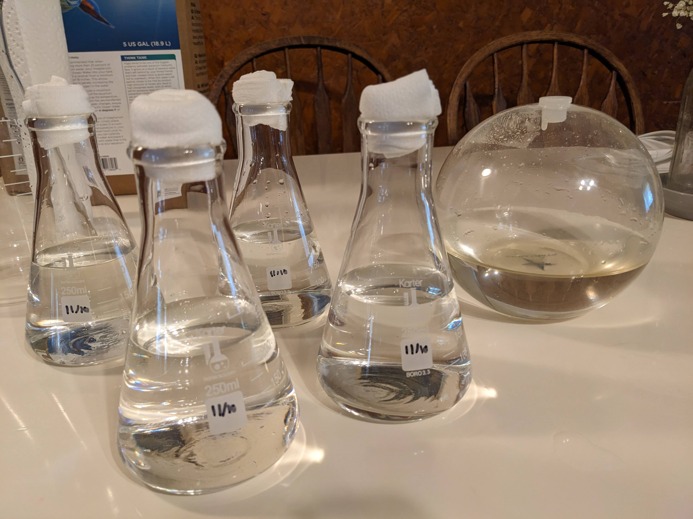

Gallery



Earth | 2025
I have been exploring more-than-human design by working with sensitive plants and creatures. One of these explorations has been growing and working with Pyrocystis fusiformis Dinoflagellates (PyroDinos). Which are naturally occurring bioluminescent marine plankton that produce a beautiful blue light with disturbed.
This is an ongoing exploration and collaboration with the PyroDinos to see how the design and artistic practice can be shaped and influenced by working with living organisms. What can we learn and discover from senstizing ourselves to the more-than-human world?